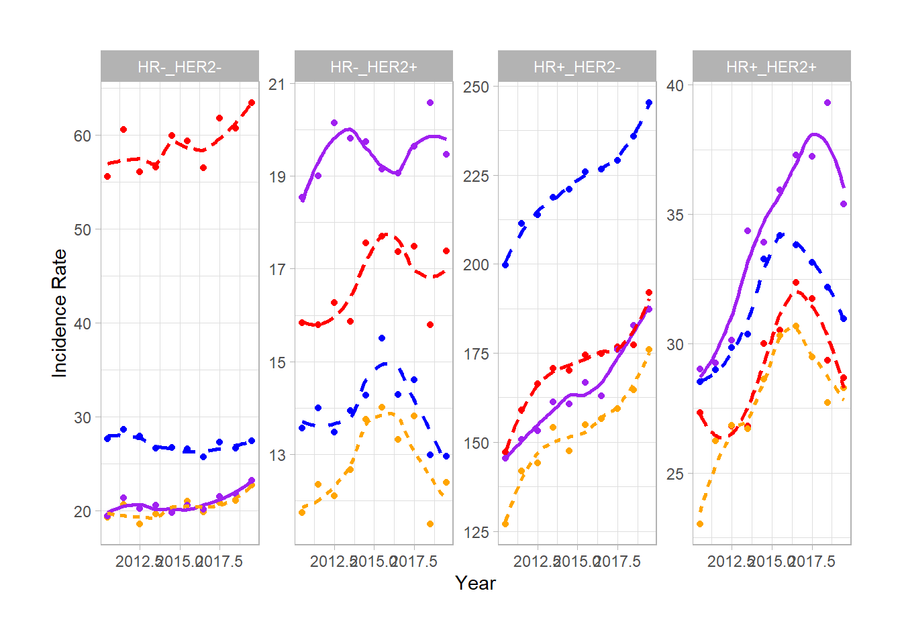
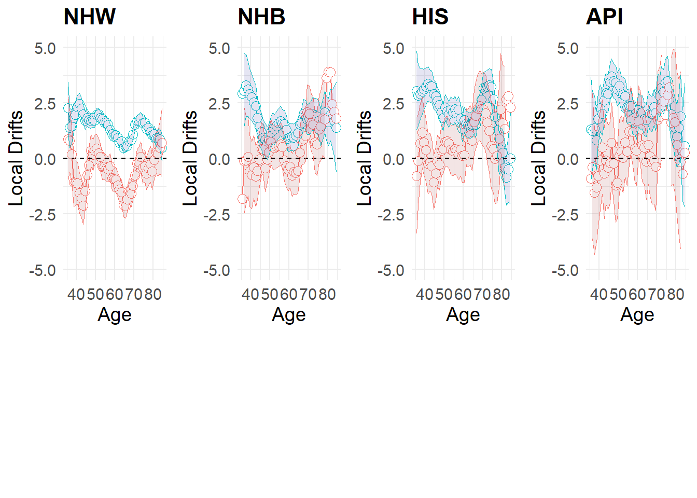

# Load the necessary libraries
library(dplyr)
# Load the data from the GitHub repository
file_url <- "https://raw.githubusercontent.com/filhoalm/Breast_cancer/main/Incidence/seer22_er_race.csv"
breast_cancer_data <- read.csv(file_url, stringsAsFactors = FALSE)
# Rename the variables to the desired names
names(breast_cancer_data) <- c("age", "year", "race", "er", "rate", "cases", "py")
# Convert 'year' to numeric and adjust the actual year
breast_cancer_data$year <- as.numeric(breast_cancer_data$year) + 1999
# Create an identifier variable for reshaping
breast_cancer_data <- breast_cancer_data %>%
mutate(id = paste(age, race, er, sep = "_"))
# Reshape 'cases' and 'py' to wide format
bc_cases_wide <- reshape(breast_cancer_data, idvar = "id", timevar = "year", direction = "wide", v.names = "cases")
bc_py_wide <- reshape(breast_cancer_data, idvar = "id", timevar = "year", direction = "wide", v.names = "py")
# Merge the 'cases' and 'py' data frames
merged_data <- merge(bc_cases_wide, bc_py_wide, by = "id", all = TRUE)
# Create a sorted vector of year column names for cases and py
years <- sort(unique(breast_cancer_data$year))
sorted_colnames <- unlist(lapply(years, function(y) c(paste0("cases.", y), paste0("py.", y))))
# Select columns in the order of 'id', then alternating 'cases.YEAR' and 'py.YEAR'
final_data <- merged_data %>%
select(c(id, sorted_colnames))
# Split the 'id' back into 'age', 'race', and 'er' and convert them accordingly
final_data <- final_data %>%
mutate(age = as.numeric(unlist(lapply(strsplit(id, "_"), `[`, 1))),
race = factor(unlist(lapply(strsplit(id, "_"), `[`, 2)),
levels = c("0", "1", "2", "3", "4", "5"),
labels = c("NHW", "NHB", "AIAN", "API", "HIS", "Unknown")),
er = factor(unlist(lapply(strsplit(id, "_"), `[`, 3)),
levels = c("0", "1", "2", "3"),
labels = c("Positive", "Negative", "Borderline/Unknown", "Recode not available")),
.keep = "unused")Malignant Breast Cancer by Molecular Subtype, Race and Ethnicity(SEER22)
Overview
This report provides a comprehensive analysis of malignant breast cancer incidence rates by molecular subtype, race and ethnicity, using data from the SEER12 registries.
- HR-positive/HER2-negative (HR+/HER2-): HR+/HER2-
- HR-negative/HER2-negative (HR-/HER2-): HR-/HER2-
- HR-positive/HER2-positive (HR+/HER2+): HR+/HER2+
- HR-negative/HER2-positive (HR-/HER2+): HR-/HER2+
Methods
Data from SEER12 is available below.
Transforming SEER22 Data into a ‘rate’ Object
The SEER22 database provides data in a long format, which is not directly compatible with the WebTool for analysis. Our primary task involves transforming these datasets into a ‘rate’ object format. This format is requisite to ensure that the data can be efficiently processed using WebTool.
For more detailed information on the structures and functionalities of ‘rate’ objects and best practices for analyzing SEER data, please consult the following research article:
You can access the repository and download the rate files using the following link:
GitHub Repository for Breast Cancer Rate Files
To align with the improved text section, we provided an example of an R code that selects a specific combination of race and ER (Estrogen Receptor) status from the dataset and includes summary information—attributes.
# NHW with Positive ER status
df <- subset(final_data, age >= 35 & age <= 84)
df1 <- subset(df, race == "NHW" & er == "Positive")
df2 <- df1[-(1:25)] # Assuming you are removing columns for years not between 2010-2020, adjust as needed
# Create a dataframe with a single row and the same number of columns as df2
summary_info <- data.frame(matrix(NA, ncol = length(df2), nrow = 5))
colnames(summary_info) <- colnames(df2)
# Fill in the summary information
summary_info[1, 1] <- "Title: Breast Cancer"
summary_info[2, 1] <- "Description: NHW - Positive"
summary_info[3, 1] <- "Start Year: 2010" # Enter the actual Start Year if available
summary_info[4, 1] <- "Start Age: 35" # Enter the actual Start Age if available
summary_info[5, 1] <- "Interval (Years): 1" # Enter the actual interval if available
# Combine the summary information with the data
combined_data_nhw_positive <- rbind(summary_info, df2)
# View the combined data
head(combined_data_nhw_positive) py.2011 cases.2012 py.2012 cases.2013 py.2013
1 Title: Breast Cancer NA NA NA NA
2 Description: NHW - Positive NA NA NA NA
3 Start Year: 2010 NA NA NA NA
4 Start Age: 35 NA NA NA NA
5 Interval (Years): 1 NA NA NA NA
697 461758 162 477685 169 481914
cases.2014 py.2014 cases.2015 py.2015 cases.2016 py.2016 cases.2017 py.2017
1 NA NA NA NA NA NA NA NA
2 NA NA NA NA NA NA NA NA
3 NA NA NA NA NA NA NA NA
4 NA NA NA NA NA NA NA NA
5 NA NA NA NA NA NA NA NA
697 162 490993 146 519841 182 513848 185 517325
cases.2018 py.2018 cases.2019 py.2019 cases.2020 py.2020 age race er
1 NA NA NA NA NA NA NA <NA> <NA>
2 NA NA NA NA NA NA NA <NA> <NA>
3 NA NA NA NA NA NA NA <NA> <NA>
4 NA NA NA NA NA NA NA <NA> <NA>
5 NA NA NA NA NA NA NA <NA> <NA>
697 185 518193 218 509463 198 524894 35 NHW Positive#combined_data_nhw_positive
# For each race anr ethnicity save the combined data to a CSV file, modifying the filename as needed
#write.csv(combined_data_nhw_positive, "C:/Users/filhoam/Desktop/Breast/Incidence/seer22/nhw_positive.csv", row.names = FALSE)Breast Cancer Rate Objects
To ensureaccess to pertinent data, a dedicated GitHub folder has been created, containing all rate files segmented by race, ethnicity, and ER (Estrogen Receptor).
R Webtool functions
Repository that content all the functional components of WebTool. This central repository provides an array of functions designed for streamlining the analysis of epidemiological data.
For more detailed insights into the capabilities and applications of the WebTool functions, you are encouraged to consult the following reference:
“A Web Tool for Age-Period-Cohort Analysis of Cancer Incidence and Mortality Rates”
#my_path <- "https://github.com/filhoalm/Breast_cancer/tree/main/RCode%208-16-22/APC/"
# setwd(my_path)
# functions <- list.files(pattern = "*.R") # Get all file names
# apc<- lapply(functions, source) # Read all data frames
#
# # Note: You will need to install all packages prior to loading them.
# packages <- c("dplyr",
# "ggplot2",
# "ggpubr",
# "ggthemes",
# "gridExtra",
# "hrbrthemes",
# "patchwork",
# "Matrix",
# "pracma",
# "scales",
# "RColorBrewer")
#
# # Load
# #lapply(packages, require, character.only = TRUE)
#
# #
# # Make sure you have the tools package
# library(tools)Webtool provides specialized function designed to facilitate the execution of core operations. Two of the most essential functions:
csv2rates Function
The csv2rates function is a data transformation utility that converts data from CSV (Comma-Separated Values) files into the standardized ‘rate’ object format required by WebTool:
- Reading the CSV file that contains the epidemiological data.
- Ensuring that the data adheres to the required structure, including appropriate variable names and formatting.
- Calculating rates such as incidences or mortalities, normalized to the population at risk.
- Returning a ‘rate’ object that can be directly utilized in subsequent WebTool analyses.
This conversion is critical for ensuring that the data can be analyzed accurately and efficiently within the WebTool framework.
apc2fit Function
The apc2fit function implements the Age-Period-Cohort (APC) model fitting on the ‘rate’ objects. The APC model is widely used in epidemiology to examine how particular outcomes change over time and across different cohorts. This function allows researchers to:
APC Parameters and Functions
# df1<-csv2rates("combined_data_nhw_positive")
# names(df1)
# lexis(df1)
# #
# M1<-apc2fit(df1)
# names(M1)
# M1$LocalDrifts
# lexis(M1)Estimable age-period-cohort (APC) parameters and functions calculated by the web tool are summarized below, along with their respective nomenclature and interpretations.
| Nomenclature | Interpretation |
|---|---|
| Net Drift | APC analogue of the estimated annual percentage change (EAPC) in the age-standardized rate (ASR); log-linear component of FTT(p | a0), PRR(p | p0) and CRR(c | c0) |
| CAT = LAT − Net Drift | Cross-sectional age trend; log-linear trend in CrossAge(a | p0) |
| LAT = CAT + Net Drift | Longitudinal age trend; log-linear trend in LongAge(a | c0) |
| Age deviations, AD(a) | Non-linear age effects incorporated into LongAge(a | c0), CrossAge(a | p0) and Long2CrossRR(a | c0, p0); orthogonal to the linear trend in age |
| Period deviations, PD(p) | Non-linear period effects incorporated into FTT(p | a0) and PRR(p | p0); orthogonal to the linear trend in period |
| Cohort deviations, CD(c) | Non-linear cohort effects incorporated into CRR(c | c0) and LocalDrifts (a); orthogonal to the linear trend in cohort (over the entire rate matrix) |
| Fitted Temporal Trends, FTT(p | a0) | Fitted rates in reference age group a0 adjusted for cohort deviations; APC analogue of the ASR |
| Cross-Sectional Age Curve, CrossAge(a | p0) | Fitted cross-sectional age-specific rates in reference period p0 adjusted for cohort deviations |
| Longitudinal Age Curve, LongAge(a | c0) | Fitted longitudinal age-specific rates in reference cohort c0 adjusted for period deviations |
| Ratio of Longitudinal versus Cross-Sectional Age curves, Long2CrossRR(a | c0, p0) | Quantifies influence of Net Drift on age-associated natural history |
| Period Rate Ratios, PRR(p | p0) | Ratio of age-specific rates in period p relative to reference period p0 |
| Cohort Rate Ratios, CRR(c | c0) | Ratio of age-specific rates in cohort c relative to reference cohort c0 |
| Local Drifts, LocalDrifts(a) | Estimated annual percentage change over time specific to age group a |
Source: “A Web Tool for Age-Period-Cohort Analysis of Cancer Incidence and Mortality Rates”
We created a function and a loop to handle the high volume of files and analysis Here is an illustrative example that demonstrates this refined approach:
# # Function to read the CSV, fit the model, and create a data frame with additional columns
# process_file <- function(file_path, race, er_status) {
# # Read file into rates (adjust csv2rates according to your function's needs)
# rates <- csv2rates(file_path)
#
# # Fit the APC model
# fit <- apc2fit(rates)
#
# # Extract the fitted temporal trends and convert to data frame
# fitted_temporal_trends <- as.data.frame(fit$FittedTemporalTrends)
#
# # Add race and er_status columns
# fitted_temporal_trends$race <- race
# fitted_temporal_trends$er <- er_status
#
# return(fitted_temporal_trends)
# }
#
# # Base directory path where files are stored
# base_path <- "C:/Users/filhoam/Desktop/Breast/Incidence/seer22/"
#
# # Vector of file identifiers
# file_identifiers <- c("nhw_positive", "nhw_negative", "nhb_positive", "nhb_negative",
# "his_positive", "his_negative", "api_positive", "api_negative")
#
# # Initialize an empty list to store results
# all_results <- list()
#
# # Loop through each file identifier
# for (identifier in file_identifiers) {
# # Construct the full file path
# file_path <- file.path(base_path, paste0(identifier, ".csv"))
#
# # Split identifier into race and ER status parts
# parts <- unlist(strsplit(identifier, "_"))
# race <- toupper(parts[1])
# er_status <- toTitleCase(parts[2])
#
# # Process the file and store the result in the list
# all_results[[identifier]] <- process_file(file_path, race, er_status)
# }
#
# # If you want a combined data frame with all results
# combined_results <- do.call(rbind, all_results)
#
# # View the combined results
# print(combined_results)
#
# # Define a vector of column names to round
# columns_to_round <- c("Rate", "CI Lo", "CI Hi")
#
# # Loop through each column name and apply the rounding function
# for (col in columns_to_round) {
# combined_results[[col]] <- round(combined_results[[col]], 0)
# }
#
# write.csv(combined_results, "C:/Users/filhoam/Desktop/Breast/Incidence/seer22/combined_results_race_er.csv", row.names = FALSE)
# Preliminarly Results
Fitted Temporal Trends (FTT)
Breast Cancer Incidence Trends by Race, Ethnicity and ER Status. Analysis of SEER22 data reveals trends in the incidence rates of malignant breast cancer from 2010 to 2020. The following figure illustrates these trends segmented by race, ethnicity, and estrogen receptor (ER) status.
library(ggplot2)
library(dplyr)
library(gridExtra)
library(grid)
# URL to the CSV file hosted on GitHub
url <- "https://raw.githubusercontent.com/filhoalm/Breast_cancer/main/Incidence/seer22/combined_results_race_er.csv"
# Read the CSV file into a data frame
combined_results <- read.csv(url, stringsAsFactors = FALSE)
# Check the first few rows of the data frame
# Assuming asr is your dataframe coming from the earlier calculations
# Plot the data with points and a smooth line, displaying separate lines for each race by subtype
# Create a Lancet-style theme for ggplot2
lancet_theme <- theme_minimal() +
theme(
text = element_text(size = 12), # Base text size is small (2pt)
plot.title = element_text(face = "bold"),
plot.subtitle = element_text(face = "italic"),
axis.text = element_text(color = "black"), # Axis tick labels color
axis.text.x = element_text(size = rel(0.1)), # X-axis tick labels size (relative)
axis.text.y = element_text(size = rel(0.1)), # Y-axis tick labels size (relative)
axis.title.x = element_text(size = rel(0.1), face = "bold"), # X-axis title size (relative)
axis.title.y = element_text(size = rel(0.1), face = "bold"), # Y-axis title size (relative)
legend.position = "bottom",
legend.text = element_text(size = rel(0.2)),
legend.title = element_blank(),
strip.background = element_rect(fill = "white", color = "black"),
strip.text = element_text(face = "bold"),
panel.grid.minor = element_blank(),
panel.grid.major.x = element_blank(),
panel.border = element_rect(color = "black", fill = NA)
)
# Assuming you have already defined lancet_theme, you can update it like this:
lancet_theme <- lancet_theme +
theme(axis.text.x = element_text(size = rel(0.5))) # Decrease x-axis text size to 80% of the current size
lancet_theme <- lancet_theme +
theme(axis.text.y = element_text(size = rel(0.5))) # Decrease x-axis text size to 80% of the current size
# Prepare the colors
# Define your color palette
colors <- c("NHW" = "blue", "NHB" = "red", "AIAN" = "green", "API" = "purple", "HIS" = "orange")
# Update the lancet_theme to include a legend
lancet_theme <- theme_light() +
theme(
# ... (Other theme components from earlier)
legend.position = "none" # Turn off the legend here, we'll add it separately later
)
# Helper function to create each plot without a legend
a<-ggplot(combined_results, aes(x = Period, y = Rate, color = race, group = interaction(race, er))) +
geom_point() +
geom_smooth(method = "loess", se = FALSE, aes(linetype = race)) +
scale_color_manual(values = colors) +
facet_wrap(~er, scales = "free_y") +
labs(x = "Year", y = "Age-Standardized Incidence Rate (ASIR)", color = "Race", linetype = "Race") +
# Assuming you want the legend at the bottom+
lancet_theme +
theme(legend.position = "bottom")
# Assuming you already have a ggplot object 'a'
a <- a + theme(plot.margin = unit(c(1, 1, 1, 1), "cm"), # Set plot margins
aspect.ratio = 2) # Make the plot "skinny" by setting aspect ratio (height is twice the width)
# Print the plot to visualize the adjustments in the R environment
print(a)Figure 1. Fitted Temporal Trends (FTT) in incidence rates of malignant breast cancer by race and ethnicity, and ER status, 2010 - 2020. SEER22
We can observe a sharp drop in rates for the year 2020. The reason is the Covid-19 pandemic effect, which impacted oncology systems and diagnostic capacity. To address this, we will exclude the year 2020 and then estimate the Net Drift.
Figure 2. Fitted Temporal Trends (FTT) in incidence rates of malignant breast cancer by race and ethnicity, and ER status, 2010 - 2019. SEER22
Net Drift
APC analogue of the estimated annual percentage change (EAPC) in the age-standardized rate (ASR); log-linear component of FTT(p | a0), PRR(p | p0) and CRR(c | c0)
# URL to the CSV file hosted on GitHub
url <- "https://raw.githubusercontent.com/filhoalm/Breast_cancer/main/Incidence/seer22/nedrift_race_er.csv"
# Read the CSV file into a data frame
df3 <- read.csv(url, stringsAsFactors = FALSE)
names(df3)<-c("eapc", "low", "high", "race", "er")
df4<-df3
# Create the lollipop chart using ggplot2
# Set factor levels for the stage to reorder
df4$er <- factor(df4$er, levels = c("Positive" , "Negative", "Borderline/Unknown", "Recode not available"))
# Set colors for the points
colors <- c("Positive" = "#E69F00", "Negative" = "#56B4E9", "Borderline/Unknown" = "#009E73", "Recode not available" = "#001E73")
# Create the lollipop chart using ggplot2 following Lancet style
ggplot(df4, aes(x = reorder(interaction(race, er, sep = " - "), eapc), y = eapc)) +
geom_segment(aes(xend = interaction(race, er, sep = " - "), yend = 0), color = "gray70") +
geom_point(aes(color = er), size=5) +
geom_hline(yintercept = 0, linetype = "dashed", color = "black") +
scale_color_manual(values = colors) +
coord_flip() +
theme_minimal(base_size = 14) +
labs(x = " ",
y = "Net Drift",
title = "Net Drift, 2010-2019",
#caption = "Data Source: [Your Data Source]"
) +
theme(text = element_text(family = "sans"),
axis.text.x = element_text(angle = 90, hjust = 1, face = "plain"),
axis.title.x = element_blank(),
axis.title.y = element_text(face = "bold"),
legend.title = element_text(face = "bold"),
legend.position = "bottom",
legend.box.background = element_rect(color = "black"),
plot.title = element_text(hjust = 0.5, face = "bold", size = 16),
plot.caption = element_text(size = 8, face = "italic", hjust = 0)) +
guides(color = guide_legend(title = "Stage"))Molecular subtype
# # Load the data from the GitHub repository
# file_url <- "https://raw.githubusercontent.com/filhoalm/Breast_cancer/main/Incidence/seer22/subtype/seer22_race_subtype.csv"
# breast_cancer_data <- read.csv(file_url, stringsAsFactors = FALSE)
#
# # Rename the variables to the desired names
# names(breast_cancer_data) <- c("age", "year", "race", "subtype", "rate", "cases", "py")
# #... same code
Figure 3. Fitted Temporal Trends (FTT) in incidence rates of malignant breast cancer by race and ethnicity, and subtype status, 2010 - 2019. SEER22
Net Drifts - molecular subtypes
Local Drifts

Figure 4. Local Drifts in Age-Specific Incidence Rates Stratified by Race and ER Status